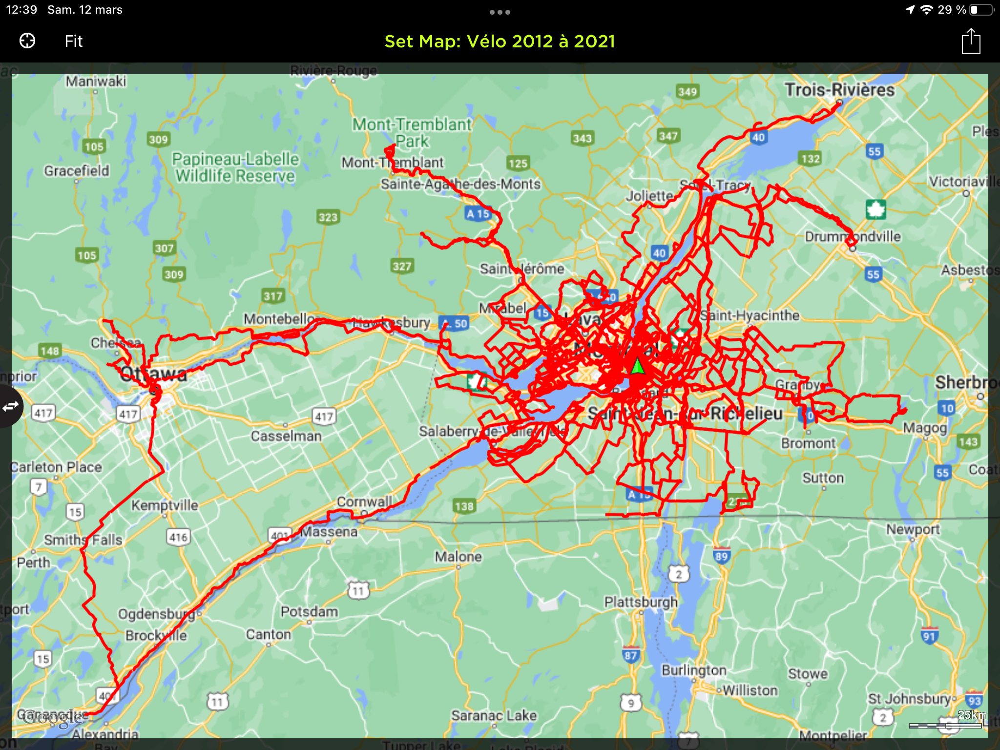
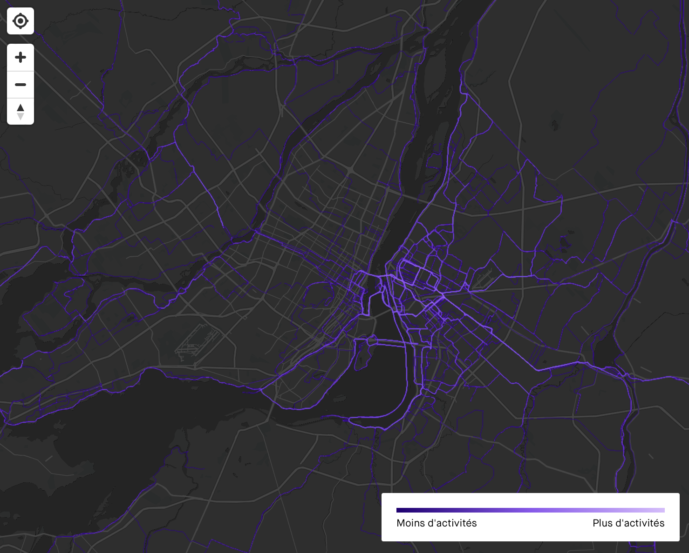

Projet HNU3000
Description du projet
Depuis 2012, j’enregistre mes randonnées à vélo avec une application sur mon iPhone, application qui n’est malheureusement plus supportée depuis quelques années (mais qui est encore fonctionnelle). J’ai pris l’habitude d’y regrouper mes tracés par année, mais durant la pandémie, j’ai fait l’essai de rassembler une copie de l’ensemble de mes trajets dans une seule et même «collection». Le but était d’avoir une vue d’ensemble d’où je suis déjà passée, entre autre afin de m’inspirer pour trouver de nouvelles routes que je n’ai pas encore explorées.

On aborde très peu le sujet des données géographiques dans le cadre des cours de la mineure en humanités numériques et j’aimerais donc explorer cet aspect davantage. C’est un sujet qui m’interpelle depuis longtemps, car j’ai d’ailleurs commencé, il y a plusieurs années, à répertorier les divers moyens de voyager avec son vélo en transport collectif (velo.amelielr.ca) et contribué aux projets collaboratifs OpenStreetMap et GravelMap.
Mais les divers outils que j’ai utilisés jusqu’à présent sont plus axés sur l’écriture de données géolocalisées. J’aimerais aussi maintenant me pencher sur l’information que je pourrais faire ressortir de mes tracés à vélo, d’abord en les triant selon des critères spécifiques, puis en les visualisant, avec des couleurs par exemple, selon l’altitude, la vitesse ou l’heure de la journée, un peu à la manière de ce que Strava permet de faire avec un abonnement payant.

Objectifs
- Exploration des outils numériques relatifs aux données géographiques.
- Faire parler, plus spécifiquement, les données de tracés gps.
Progression
- Préparation du site web afin de documenter le processus et constituer un rapport d’expérience
- Description du projet
- Recherches
- Choix des outils
- Expérimentations et codage
- Xxxxx